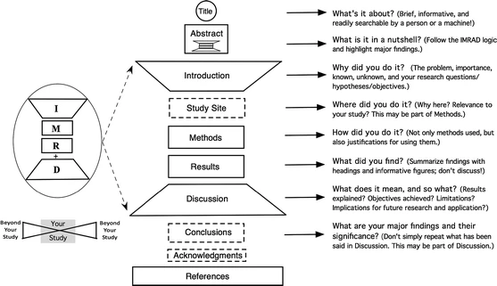

Ekosistem Publikasi Ilmiah
Workshop Publikasi Ilmiah untuk Mahasiswa Doktoral: Bagian 1️⃣
2026-05-01
Outline
- Mengapa publikasi itu penting?
- Moda komunikasi kesarjanaan & jenis artikel
- Lanskap jurnal ilmiah — publisher, pangkalan data, kategorisasi
- Waspada jurnal/penerbit pemangsa
- Bagaimana proses penerbitan ilmiah bekerja? — dari manuskrip ke publikasi
- Struktur naskah ilmiah (IMRAD)
- Naskah yang layak terbit — konten + presentasi naskah
- Latihan menulis: elevator pitch
Mengapa publikasi itu penting?
Lebih dari sekadar kewajiban administratif
- Publikasi adalah cara pengetahuan disebarluaskan, diuji, dan dikritisi oleh komunitas ilmiah
- Tanggung jawab moral peneliti — temuan yang tidak dipublikasikan adalah pengetahuan yang hilang
- Bukan digunakan untuk mengukur kualitas peneliti, tetapi sebagai kontribusi pada perkembangan keilmuan
- Memupuk academic ethos → persistence & hardworking
- Bagian dari semangat knowledge sharing — ilmu yang baik harus bisa diakses dan diverifikasi
- Langkah pertama sebelum menulis adalah mengenali lanskap publikasi ilmiah dan memilih outlet yang dituju untuk publikasi
Yang terjadi kalau kita salah memilih outlet…
- Naskah diterbitkan di jurnal palsu/pemangsa, akibatnya:
- Reputasi tercederai — siapapun yang namanya tercantum: mahasiswa maupun promotor
- Merupakan indikasi bahwa peneliti memilih jalan instan (padahal keseluruhan prosesnya ‘berliku-liku’)
- Mempersulit karir dalam jangka panjang — baik akademik maupun struktural
- Khilaf satu-dua kali, that’s okay. Tapi kalau berulang, ada indikasi ketidakjujuran
Penting untuk memilah outlet
Oleh karena itu, memilah jurnal adalah proses yang sangat penting — dan akan kita bahas lebih lanjut di sesi ini.
Moda komunikasi & jenis artikel
Moda komunikasi kesarjanaan
Karya ilmiah dapat dikomunikasikan dalam berbagai bentuk:
- Monograf & bab buku (edited book) — relevan khususnya di bidang humaniora dan ilmu sosial
- Magnum opus ilmuwan-ilmuwan yang berpengaruh dari bidang sosial-humaniora biasanya berupa monograf
- Preprint — versi naskah sebelum ditinjau sejawat (peer-review), diunggah ke server terbuka (e.g., PsyArXiv, OSF Preprints)
- Postprint — versi naskah yang sudah ditinjau sejawat tetapi belum ditata letak sesuai gaya selingkung (in-house style) penerbit terbitan berkala ilmiah.
- Conference paper / proceedings — presentasi di konferensi; berguna untuk membangun jaringan tetapi tidak selalu ditinjau sejawat
- Moda utama untuk sejawat di computer dan cognitive science
- Artikel jurnal — melalui proses tinjauan sejawat; yang paling diinginkan dalam PAK dan karir akademik

Jenis artikel ilmiah 1️⃣
Berbasis data primer
- Original research (artikel empiris)
- Pendek – satu atau dua studi
- Panjang – multiple studies article – bisa 4-12 studi dalam satu artikel
- Artikel replikasi (registered replication reports (RRR, Simons, et al., 2014))
- Artikel dengan protokol yang terdaftar sebelumnya (preregistered studies)
- Penelitian simulasi
- Brief/short communication
- Case study/report
- Registered Report ⭐ — desain & hipotesis dinilai reviewer sebelum data dikumpulkan dan dianalisis
Jenis artikel ilmiah 2️⃣
Berbasis literatur (sekunder)
- Meta Studies
- Scoping review, systematic review, meta analysis
- Narrative review / conceptual paper
- Methodological paper
- Tutorial, book review, data paper
- Target article
- Target article → Commentary → Rejoinder
- Biasanya highly citable tetapi… kadang-kadang menjadi sumber “drama” karena memantik kontroversi dan debat yang ekstrim
- Cenderung “spekulatif” tetapi biasanya banyak dibaca orang karena mengandung “prediksi teoritis.”
Registered reports (Chambers, 2015)
- Format artikel yang populer baru-baru ini
- Tujuannya, untuk memastikan penelitian benar-benar cermat secara ilmiah.
- Menghindari questionable research practices, seperti hypothesizing after results are known (HARK-ing).
- Peneliti diminta untuk submit perencanaan studi/protokol (sebelum pengambilan data) untuk kemudian ditinjau sejawat di tahap satu.
- Setelah lolos tinjauan sejawat tahap satu (“accepted in principle”), kemudian peneliti mengambil data dan melaporkan temuannya.
- Setelah itu, artikel ditinjau di tahap kedua untuk diambil keputusan penerbitannya.
- Ada 304 jurnal yang menyediakan opsi registered reports dari berbagai disiplin; mulai dari psikologi, biomedis, manajemen, linguistik, biologi, ilmu politik, dsb.

Lanskap jurnal ilmiah
Ekosistem pengetahuan ilmiah
Tiga komponen utama:
- Publisher/Penerbit — entitas komersial/non-profit yang menerbitkan jurnal (e.g., Elsevier, SAGE, Springer, Airlangga University Press, UC Press, dsb.)
- Jurnal (standalone atau di bawah naungan publisher) — tempat artikel diterbitkan
- Pangkalan data (database) — basis data yang memungkinkan artikel ditemukan dan diakses, biasanya dilanggan oleh perpustakaan universitas
Analogi sederhana 🐔🥚
- Publisher = percetakan ↔︎️ produsen daging/rumah potong
- Jurnal = majalah ilmiah ↔︎️ daging ayam
- Database = perpustakaan digital ↔︎️ supermarket yang menjual daging ayam
Publisher/penerbit besar
Publisher komersil yang dikenal luas:
- Elsevier, Wiley, Springer/Nature, Taylor & Francis, SAGE, Oxford University Press, Cambridge University Press
- Masing-masing menerbitkan ratusan hingga ribuan jurnal
- Tidak semua jurnal dari publisher besar otomatis berkualitas baik
- Ada penerbit kecil/independen yang reputasinya justru sangat kuat (e.g., Brill)
- Di Indonesia: UP3 (Unit Publikasi Penelitian Psikologi), penerbit universitas (e.g., Airlangga University Press)
Note
Standalone journal seperti Bijdragen tot de taal-, land- en volkenkunde / Journal of the Humanities and Social Sciences of Southeast Asia tidak dimiliki oleh publisher besar, tetapi “dianggap” bereputasi. Ukuran penerbit tidak menentukan kualitas jurnal.
Pangkalan data (database)
- Scopus — indeks internasional paling umum digunakan di Indonesia (Elsevier)
- Web of Science (WoS) / Web of Knowledge — lebih selektif dari Scopus
- APA PsycNET — khusus literatur psikologi
- EBSCO, JSTOR — multi-disiplin
- DOAJ (Directory of Open Access Journals) — khusus jurnal open access
- SINTA — pangkalan data nasional Indonesia (Kemdikbudristek)
- Google Scholar — berguna untuk menemukan artikel, bukan untuk mengklaim kualitas jurnal
Penting
Terindeks di Scopus ≠ berkualitas baik. Tidak terindeks = sinyal untuk waspada.
Open access (OA) vs non-OA journal
- Open access (OA)
- Artikel bisa diakses bebas tanpa biaya langganan
- Hak cipta (copyrights) tetap di tangan penulis
- Penulis biasanya membayar Article Processing Charge (APC) — dibayar setelah naskah accepted
- Non-OA journal
- Pembaca membutuhkan biaya langganan yang mahal
- Hak cipta (copyrights) ditransfer ke jurnal/penerbit
- Biasanya tidak ada APC untuk penulis
Penting diingat
Jenis akses tidak berkaitan dengan kualitas — ada banyak jurnal OA yang sangat bagus dan banyak non-OA journal yang kualitasnya rendah.
Jurnal berdasarkan open access policy
| Jenis | APC | Lisensi | Contoh |
|---|---|---|---|
| Gold OA | Dibayar penulis (bisa mahal) | BY 4.0 | PLOS ONE, Frontiers |
| Diamond OA | Gratis untuk penulis & pembaca | BY 4.0 | sebagian jurnal universitas |
| Green OA | Tidak ada | Tergantung penulis, umumnya BY 4.0 | preprint di PsyArXiv/OSF |
| Hybrid OA | Opsional, perlu bayar kalau ingin artikel OA | Kalau OA, maka BY 4.0 | banyak jurnal Elsevier/Wiley |
Jurnal berdasarkan open access policy
- Jurnal hybrid sering dianggap model yang paling tidak menguntungkan peneliti
- Penerbit mendapatkan pemasukan dari APC dan biaya langganan dari institusi (“double dipping”)
- cOAlition S atau Plan S, yaitu koalisi funder Eropa yang mencakup Wellcome Trust dan banyak lembaga riset di Eropa (e.g., Deustche Forschungsgemeinschaft (DFG)), secara eksplisit melarang publikasi di jurnal hybrid kecuali ada transformative agreement antara institusi/konsorsium universitas dengan penerbit.
Waspada jurnal/penerbit pemangsa😼
Karakteristik jurnal/penerbit pemangsa
- Sebenarnya, istilah “jurnal/penerbit pemangsa” sangat sulit didefinisikan
- Intinya, jurnal/penerbit pemangsa ini didefinisikan sebagai “entitas yang mengutamakan kepentingan pribadi dengan mengorbankan integritas akademik dan ditandai oleh informasi yang salah atau menyesatkan, penyimpangan dari praktik editorial dan penerbitan terbaik, kurangnya transparansi, dan/atau penggunaan praktik pemasaran yang agresif dan tanpa pandang bulu”
- Kadang tidak terindeks di pangkalan data manapun
- Tapi, ada banyak jurnal yang praktiknya mirip “jurnal pemangsa” yang terindeks Scopus dan/atau WoS (ESCI)
- Penerbit tidak jelas dan cenderung komersil, tujuannya meraup keuntungan sebanyak-banyaknya, bukan mewadahi komunikasi kesarjanaan
- Impact factor jadi-jadian (bukan JIF resmi dari Clarivate)
- Tidak melakukan peer-review yang sesungguhnya, atau prosesnya sangat singkat dan sekadar formalitas
- Praktik-praktik kontrak curang dalam publikasi ilmiah sudah sangat kompleks dari sekadar jurnal palsu/pemangsa
Cara mengidentifikasi — cek dulu sebelum submit!
- Identitas jurnal: apakah nama jurnal/penerbit familiar? Ada alamat pos yang valid?
- ISSN: cek di portal ISSN resmi (portal.issn.org)
- Cek kebijakan jurnal di Open Policy Finder: cek kebijakan jurnal di Open Policy Finder (dulu SHERPA-RoMEO). Kalau jurnal terdaftar di laman terssebut, maka mungkin jurnal tersebut legitimate (asli)
- Editorial board: apakah editor dan reviewer dikenal? Berafiliasi dengan institusi yang jelas?
- Biaya: apakah ada submission charge sebelum review? → 🔴RED FLAG🔴
- APC yang ditagih setelah accepted = normal di jurnal OA bereputasi
- APC dan waiver: banyak jurnal OA bereputasi menyediakan waiver untuk penulis dari negara berpenghasilan menengah-bawah
- Selalu tanyakan waiver jika tersedia Turnaround time: berapa lama biasanya dari submit hingga keputusan pertama?
- Transparansi: apakah proses peer-review dijelaskan dengan jelas? Berapa lama biasanya jurnal memproses naskah (turnaround time)?
- Komunikasi editorial: apakah email selalu dijawab? Apakah ada kontak editorial yang jelas?
- Konten: baca beberapa artikel — apakah kualitasnya konsisten dan memadai?
Think. Check. Submit.

Tiga langkah sebelum memilih jurnal:
- Think 🔴 — apakah jurnal ini benar-benar cocok untuk topik naskah dan prospek karir saya ke depan?
- Check 🟡 — verifikasi identitas, proses editorial, dan reputasi jurnal
- Submit 🟢 — hanya setelah Anda yakin jurnal tersebut dikelola dengan baik dan sesuai dengan tujuan Anda
Lebih lengkap cek: thinkchecksubmit.org
Bagaimana jurnal bekerja?
Dari manuskrip ke publikasi 1️⃣
- Submit — mendaftarkan naskah ke sistem jurnal (biasanya online)
- Initial assessment — editor memutuskan:
- Apakah naskah sesuai scope jurnal?
- Apakah kualitas awal memadai untuk dikirim ke reviewer?
- Jika tidak → desk reject (biasanya dalam 1–2 minggu, tapi bisa lebih lama)
- Peer-review — naskah dikirim ke 2–3 (atau lebih) reviewer ahli di bidang yang relevan
Dari manuskrip ke publikasi 2️⃣
- Keputusan editor setelah review:
- Major revision — perlu revisi substansial, kemungkinan re-review
- Minor revision — revisi kecil, biasanya tidak perlu re-review
- Rejection — ditolak (tapi bukan akhir dunia!😉)
- Accept — langsung diterima tanpa revisi (sangat jarang)
- Revisi — penulis merespons masukan reviewer secara tertulis (response to reviewers)
- (Re-)review — kadang kembali ke reviewer untuk evaluasi revisi
- Copyediting & proofreading → Terbit (published)
Waktu proses
2 minggu (desk reject) hingga 12 bulan+ (sejak submit hingga terbit). Turnaround time saat ini bisa lebih lama karena editor umumnya kesulitan mencari reviewer.
Desk rejection
- Desk rejection rate di jurnal bereputasi bisa mencapai 60–76% (Billsberry, 2014)
- Artinya: mayoritas naskah tidak pernah sampai ke tangan reviewer
- Penyebab utama desk rejection:
- Scope tidak sesuai — naskah tidak relevan dengan fokus jurnal
- Kualitas awal tidak memadai — tulisan tidak memenuhi standar jurnal, meskipun “standar” disini bisa jadi penilaian subjektif dari editor
- Format/teknis — tidak mengikuti author guidelines
- Bahasa — terutama hambatan bagi penulis non-penutur asli bahasa Inggris
Catatan penting (Garand & Harman, 2021)
Peneliti dari negara non-berbahasa Inggris dan early career researcher lebih rentan terkena desk rejection — ini adalah gatekeeping struktural dalam sistem publikasi ilmiah global yang perlu disadari.
Siapa saja yang terlibat?
Editor ingin…
- Naskah berkualitas yang dibaca banyak orang
- Konten yang sesuai scope jurnal
- Kontribusi yang orisinal (jika memungkinkan), atau setidaknya memadai
Reviewer ingin…
- Kontribusi ilmiah yang adekuat dan jelas
- Metodologi yang kuat dan transparan
- Argumentasi dipaparkan secara jernih, tidak bertele-tele
Pembaca ingin…
- Cepat menemukan informasi relevan → indexing, keywording
- Temuan yang bisa dipercaya dan direplikasi
- Implikasi yang jelas dan konkret
Penulis ingin…
- Karyanya disitasi orang lain
- Kontribusi diakui komunitas ilmiah
Naskah yang baik — apa saja karakteristiknya?
Kompromi antara semua pihak di slide sebelumnya. Naskah yang baik:
- Ide penelitian bisa jadi sederhana tapi dieksekusi dengan desain penelitian yang baik
- Menyajikan penjelasan yang langsung pada intinya — tidak berputar-putar, membuat pembaca bingung
- Melakukan eksplorasi yang menyeluruh atas literatur yang relevan — ini tampak di state-of-the-art yang dipaparkan di bagian introduction
- Menghasilkan temuan/sintesis yang substansial — bukan sekadar deskripsi
- Concise — to-the-point, tapi dengan argumentasi yang kuat
- Ditulis dengan tata bahasa yang baik
Struktur naskah ilmiah (IMRAD)

Sumber: Wu, 2011
Naskah yang layak terbit
Dua dimensi kualitas naskah
Untuk menghasilkan naskah yang baik, perhatikan dua dimensi:
- Konten → terkait dengan:
- Pertanyaan penelitian yang jelas dan relevan
- Metode yang sesuai dan dijelaskan dengan detail dan transparan (sehingga bisa direplikasi)
- Sintesis/temuan yang menjawab pertanyaan penelitian
- Presentasi → aspek teknis:
- Tata bahasa yang baik dan konsisten
- Sistematika yang logis dan mengalir
- Format sesuai author guidelines jurnal yang dituju
Menulis adalah skill, bukan bakat
- Banyak naskah yang tak layak muat bukan karena penelitiannya buruk — tapi simply tidak ditulis dengan baik
- Menulis naskah yang baik dapat dilatih — continuous improvement adalah kuncinya
- Dengan terus menulis dan mendapatkan feedback, kemampuan kita terus berkembang
- Feedback dari reviewer kadang terasa sangat menyakitkan — tapi jangan sampai membuat kita demotivasi
- Hampir semua peneliti senior pernah mengalami penolakan berulang sebelum berhasil terbit
Rejection bukan akhir dunia👍
- Hans Krebs (1937) — Nature menolak naskahnya tentang siklus asam sitrat (citric acid cycle). Terbit di Experientia dan menang hadiah Nobel tahun 1953.
- Barry Marshall (H. pylori) — Abstraknya ditolak dari konferensi tahunan Australian Gastroenterological Society (1983) karena dinilai terlalu jelek oleh reviewer yang menganggap idenya tidak masuk akal. Ia bahkan meminum cawan petri berisi H. pylori untuk membuktikan klaimnya. Menang hadiah Nobel 2005.
- Peter Higgs (Higgs boson) — Physics Letters menolak naskah aslinya (1964). Terbit di Physical Review Letters dan menang hadiah Nobel tahun 2013.
- Dan Shechtman (kuasikristal) — Journal of Applied Physics menolak naskahnya (1982); koleganya memintanya meninggalkan kelompok riset, dan bahkan Linus Pauling (peraih Nobel dua kali) merendahkan idenya secara terbuka. Terbit di Physical Review Letters (1984) dan menang hadiah Nobel Kimia 2011.
Rejection adalah masalah semua orang
Keempat peneliti di atas memenangkan Nobel setelah naskah mereka ditolak. Rejection bukan penilaian akhir atas kualitas riset Anda. Rejection seringkali hanya soal timing, jurnal yang tepat, atau reviewer yang irrationally skeptis.
Latihan menulis ✍️
TUGAS 1️⃣: Elevator Pitch (15 menit)
Tuliskan minat penelitian Anda dalam 3–4 kalimat:
- Kalimat 1 — Identifikasi topik/fenomena yang Anda teliti (bukan judul penelitian, tapi masalahnya)
- Kalimat 2 — Jelaskan mengapa topik ini perlu diteliti — apa kesenjangan di literatur?
- Kalimat 3 — Rumuskan pertanyaan penelitian Anda secara spesifik
- Kalimat 4 (opsional) — Sebutkan pendekatan yang Anda gunakan (kuantitatif, kualitatif, dll.)
- Tuliskan tugas Anda di halaman Padlet ini
Tes apakah elevator pitch bekerja dengan baik
Bisakah Anda menjelaskan topik riset Anda kepada seseorang di luar bidang Anda dalam waktu 1 menit, dan mereka memahaminya? Jika ya, maka elevator pitch bekerja dengan baik.
Contoh elevator pitch yang baik
Kurang baik ❌
“Penelitian saya tentang kesehatan mental. Ini penting karena masalah kesehatan mental banyak terjadi. Saya ingin tahu lebih banyak tentang ini dengan melakukan systematic review.”
Masalah: terlalu umum, tidak ada kesenjangan yang jelas, pertanyaan penelitian tidak spesifik.
Lebih baik ✅
“Kecemasan sosial pada mahasiswa perguruan tinggi sering tidak terdiagnosis dan tidak tertangani. Meski prevalensinya diperkirakan tinggi di Asia Tenggara, belum ada tinjauan sistematis yang mengkaji efektivitas intervensi berbasis komunitas di kawasan ini. Systematic review ini bertujuan mengidentifikasi jenis intervensi yang tersedia dan mengevaluasi bukti efektivitasnya.”
Ada pertanyaan❓

Note
- Paparan disusun dengan menggunakan Quarto dengan template dari UNAIR Theme.
- Kontak saya via amelia.zein@psikologi.unair.ac.id